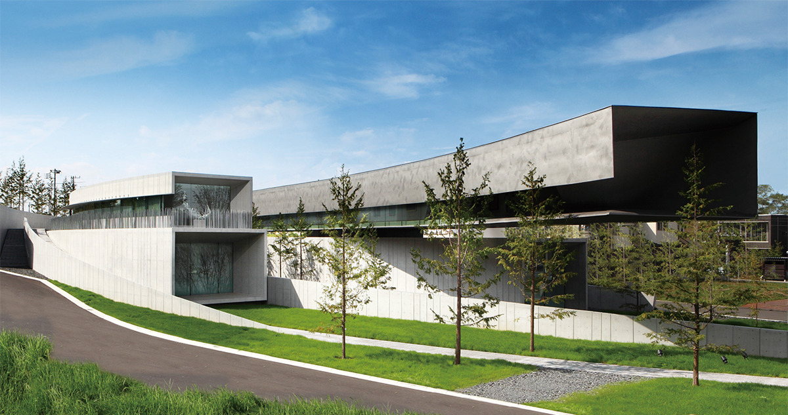
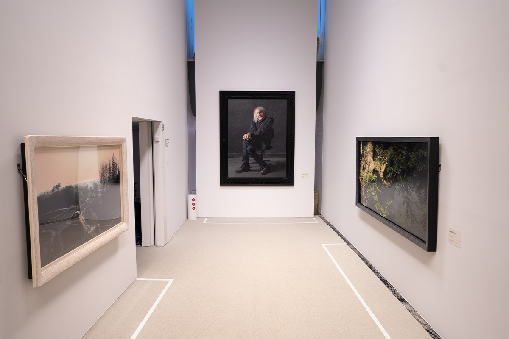
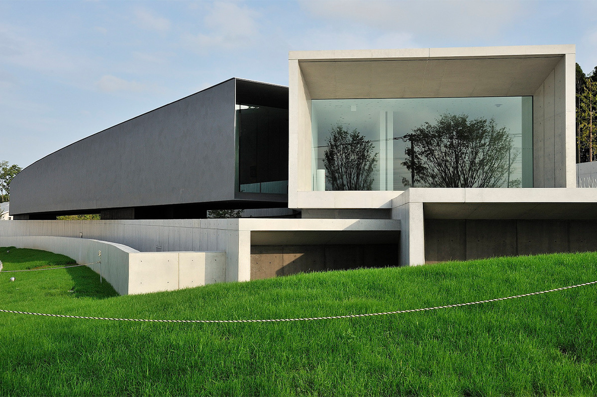
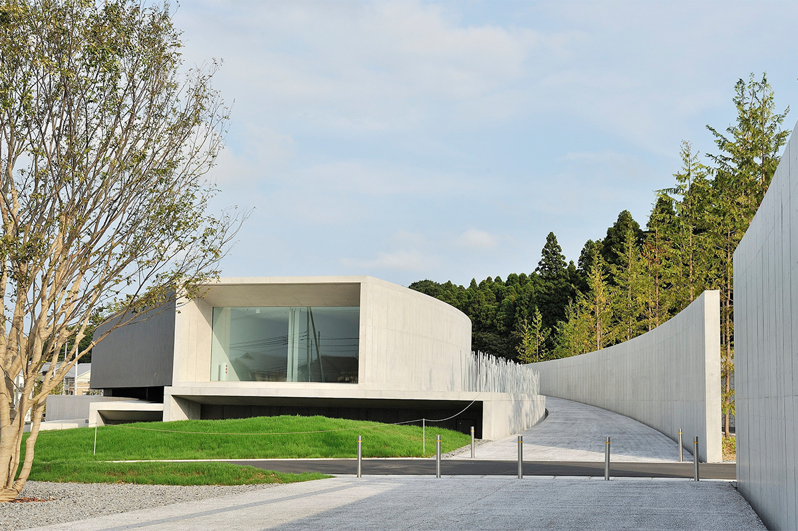
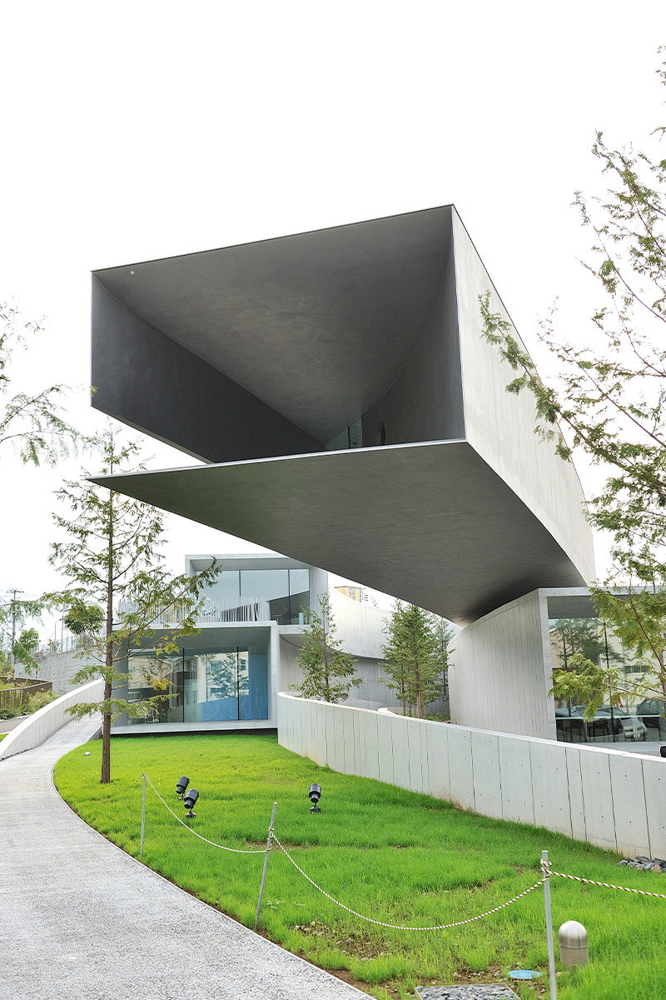
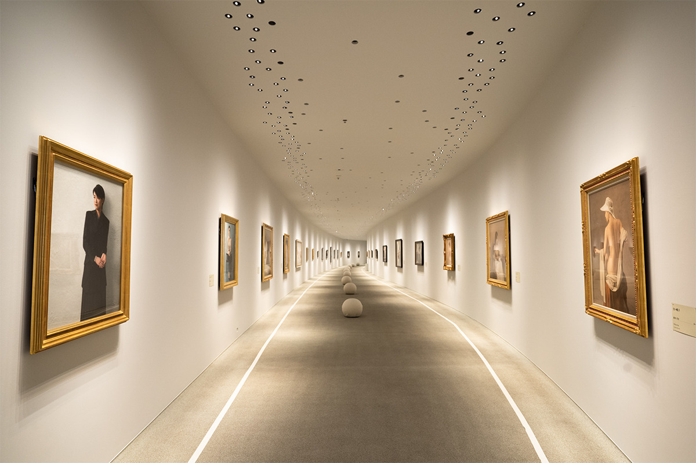
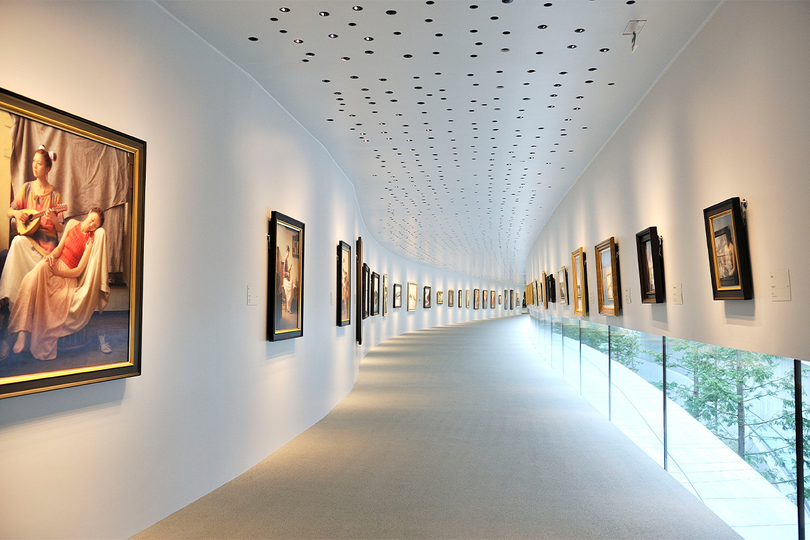
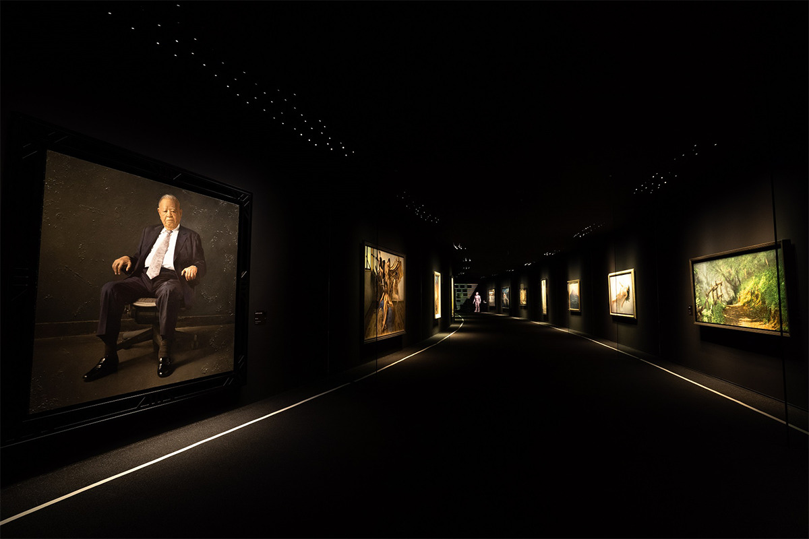
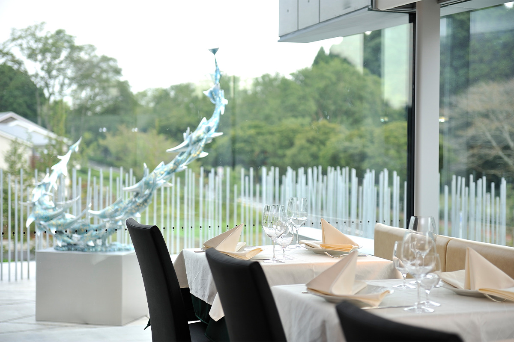

Префектура Тиба · Тиба · искусство
Музей Хоки в Тибе: картины, которые легко принять за фотографии

На первый взгляд эти картины кажутся фотографиями. Музей Хоки в Тибе стал первым в Японии музеем, где показывают только реалистическую живопись, а само здание с галереями-коридорами получило Японскую архитектурную премию.
Музей
Коллекция одного человека
Музей Хоки находится в районе Мидори города Тиба, по соседству с большим парком «Сёва-но мори». Это первый в Японии музей, целиком посвящённый реалистической живописи. Здесь выставлено около 120 работ примерно 40 современных японских художников, а галереи на одном надземном и двух подземных этажах складываются в коридор общей длиной 500 метров.
Название музею дал его основатель Масао Хоки. Основой собрания стали картины в реалистической манере, которые он годами собирал сам. Под реалистической живописью здесь понимают масляные картины, где предмет передан таким, какой он есть, до мельчайших деталей, так что издали полотно легко принять за снимок.

Архитектура
Здание как ещё один экспонат


Картины в музее необычные, но и здание заслуживает отдельного взгляда. Одна из галерей висит в воздухе без опор снизу: это консольная конструкция. Из пяти коридоров здания один сделан из стального листа. Часть бетонных стен внутри мастера вручную довели до мягкого перехода в белый цвет.
Забора вокруг музея нет. Вместо него из земли поднимаются тонкие стальные прутья, похожие на заросли травы сусуки. Здание задумано как часть паркового пейзажа и не спорит с окружающей зеленью. В 2011 году оно получило Японскую архитектурную премию, а также архитектурную премию префектуры Тиба и премию города Тиба в области городской культуры.

Галереи
Ничего лишнего, кроме картин

У каждой из восьми галерей своя высота потолка. На стенах нет ни реек, ни тросов для подвески картин, чтобы взгляд не цеплялся ни за что, кроме живописи. Стены первой галереи сделаны из стали, и картины держатся на них с помощью магнитов.
Свет везде светодиодный. Если присмотреться, в некоторых отверстиях на потолке ламп нет: это вентиляция. В таких же маленьких отверстиях спрятано всё, что требуют пожарные нормы и закон: дымоудаление, датчики дыма, динамики, спринклеры. Розетки убраны в пазы, так что посетитель видит только картины.

Пол покрыт резиновой крошкой, сделанной на заказ, чтобы не было слышно шагов. Атмосфера, высота потолка и ширина коридора меняются от галереи к галерее, поэтому даже за несколько часов осмотра устаёшь меньше обычного. Здание строили специально для коллекции Масао Хоки, и всё в нём рассчитано на долгое неторопливое созерцание.
Выставки
Мастера реализма

Выставки в восьми галереях делятся на постоянные и временные, всего одновременно показывают около 120 работ. Здесь можно увидеть картины признанных мастеров японского реализма: Сосукэ Моримото, Хироси Ноды, Тадахико Накаямы. Жанры самые разные: портреты, пейзажи, натюрморты. Часть работ художники написали специально для музея Хоки.
На временных выставках показывают, например, картины, получившие премию музея Хоки, или устраивают юбилейные экспозиции к годовщине открытия. Кроме живописи в музее есть зал для керамики.
Отдых
Ресторан и магазин

При музее работают ресторан, кафе и магазин. Самое популярное место: итальянский ресторан «Ханау». Здесь между залами можно пообедать и выпить бокал вина, глядя в окно на зелень. В музейном магазине продают открытки и кружки с картинами из коллекции.
13 августа 2026 года после сильного ливня в здание попала вода, и музей вместе с рестораном закрылся на неопределённый срок. Дальнейшие планы, в том числе дату повторного открытия, музей обещает сообщить на своём сайте, поэтому перед поездкой стоит его проверить.
Музей Хоки
- Адрес
- префектура Тиба, Тиба, район Мидори, Асумигаока-Хигаси, 3-15
- Телефон
- +81 43-205-1500
- Часы работы
- 10:00–17:30 (вход до 17:00)
- Выходные
- вторник (если вторник праздничный день, то среда)
- Сайт
- hoki-museum.jp